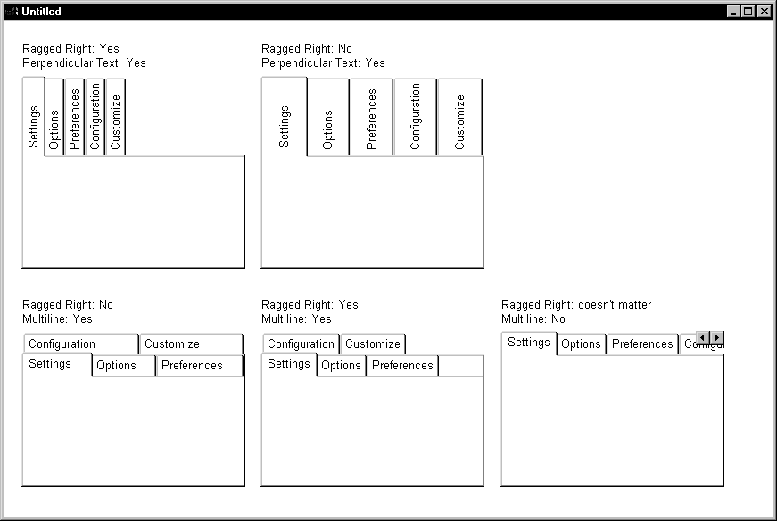
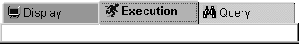

The Tab control has settings for controlling the position and appearance of the tabs. Each tab can have its own label, picture, and background color.
All tabs share the same font settings, which you set on the Tab control's Font property page.
A Tab control has several elements, each with its own pop-up menu and property sheet. To open the property sheet, double-click or select Properties on the pop-up menu.
Where you click determines what element you access.
The General tab in the Tab control's property sheet has several settings for controlling the position and size of the tabs. For example:
 Fixed Width and Ragged Right When Fixed Width is checked, the tabs are all the same size.
This is different from turning Ragged Right off, which stretches
the tabs to fill the edge of the Tab control, like justified text.
The effect is the same if all the tab labels are short, but if you
have a mix of long and short labels, justified labels can be different
sizes unless Fixed Width is on.
Fixed Width and Ragged Right When Fixed Width is checked, the tabs are all the same size.
This is different from turning Ragged Right off, which stretches
the tabs to fill the edge of the Tab control, like justified text.
The effect is the same if all the tab labels are short, but if you
have a mix of long and short labels, justified labels can be different
sizes unless Fixed Width is on.
This figure illustrates the effect of combining some of these settings. Tab Position is Top:

This sample Tab control is set up like an address book. It has tabs that flip between the left and right sides. With the Bold Selected Text setting on and the changing tab positions, it is easy to see which tab is selected:

You can change the appearance of the tab using the property sheets of both the Tab control and the Tab page.
If you are working in the User Object painter on an object you will use as a tab page, you can make the same settings on the TabPage page of the user object's property sheet that you can make in the tab page's property sheet.
This example has a picture and text assigned to each tab page. Each tab has a different background color. The Show Picture and Show Text settings are both on:

All these settings in the painter have equivalent properties that you can set in a script, allowing you to change the appearance of the Tab control dynamically during execution.